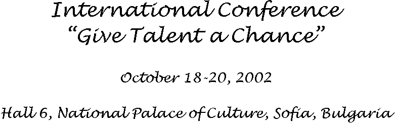
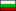

Programming contests for university students
Nikolay Kirov Kirov
| Permanent: | Institute of Mathematics and Informatics, Bulgarian Academy of Sciences |
| Temporary: | Burgas Free University |
| South-West University "Neofit Rilski" - Blagoevgrad | |
| New Bulgarian University - Sofia |
Programming contests for university students is an activity of a group of university lecturers that provides university students with an opportunity to demonstrate and sharpen their problem solving and computing skills. Our ambition is to involve all the students with good results in informatics and programming from Bulgarian universities.
List of Bulgarian universities with essential teaching in programming
State universities:
Sofia University "St. Kliment Ohridski"
University of Plovdiv "Paisii Hilendarski"
South-West University "Neofit
Rilski"
St. Cyril and St. Methodius University
of Veliko Turnovo
Shumen University "Konstantin Preslavsky"
Technical state universities:
Technical University of Sofia
Technical University
of Gabrovo
Technical University of Varna
Economics state universities:
University of National and
World Economy
Varna University of Economics
Other universities:
American University in Bulgaria
New Bulgarian University
Burgas Free University
Varna Free University "Chernorizets
Hrabar"
ACM International Collegiate
Programming Contest
organized by Association for Computing Machinery (ACM),
sponsored by IBM
Rules for ACM
contests.
Basic rules:
Each team consists of
three contestants.
Each team will use a
single computer.
The programming language
are Java, C++, C, and Pascal.
Contestants may bring
resource materials such as books, manuals, and program listings. Contestants
may not bring any machine-readable versions of software or data.
Solutions to problems
submitted for judging are called runs. Each run is judged as accepted or
rejected by a judge, and the team is notified of the results.
Teams are ranked according
to the most problems solved.
Interuniversity programming contest
March 24, 2002
Organized by BURGAS FREE UNIVERSITY
Statistics:
- 9 Bulgarian universities
- 13 teams
- 5 problems for 4 hours
Fifth national interuniversity programming tournament
May 19, 2002, Host in BURGAS FREE UNIVERSITY
Statistics:
- 10 Bulgarian universities
- 20 teams
- 8 problems for 5 hours
Basic courses in programming:
Introduction in programming
- I semester 
Programming and data
structures - II semester
Object-oriented programming
- III semester
Special courses:
Programming and analysis of algorithms (BFU)
Advanced programming (NBU and SWU)
Internet based training:
Coach publish a problems
Student write a program
and send source code by e-mail
Coach test the code,
replay by some standard answers and publish the replay
If the answer is not
ACCEPTED, the student can correct source code and send again
After few attempts the
couch replay an e-mail with comments and suggestions
Internal university contests:
Two or three times in
term we organize internal contests with participation of 5-6 teams.
We plan to organize at least 3 contests in 2003:
International regional contest
Date: February
Place: Blagoevgrad, host SWU
Potential participants:
South-West University "Neofit Rilski" - Blagoevgrad
American University in Bulgaria - Blagoevgrad
Sofia University "St. Kliment Ohridski"
New Bulgarian University - Sofia
University of Nis
Ss. Cyril and Methodious University - Skopje
Institute of Informatics PMF Skopje
Technical University of Crete
Aristotle University - Thessaloniki
Second interuniversity programming contest
Date: March
Place: Burgas, Burgas Free University
Potential participants: Bulgarian Universities
Sixth national interuniversity programming tournament
Date: May
Place: Shumen, host Shumen University "Konstantin Preslavsky"
Potential participants: Bulgarian Universities
Nikolay Kirov Kirov
Institute of Mathematics and Informatics, Bulgarian Academy
of Sciences
E-mail: nkirov@math.bas.bg
Abstract:
Programming contests for university students is an activity of a group
of university lecturers that provides university students with an opportunity
to demonstrate and sharpen their problem-solving and computing skills.
Two main topic are discussed - training advanced students in programming
and
programming contests for university students held this year in Bulgaria.